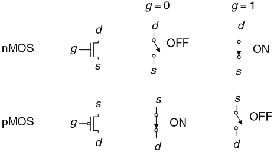

Напряжение на затворе (g) управляет током между истоком (s) и стоком (d).
Транзисторы n-МОП выключены, когда значение напряжения на переходе соответствует логическому 0, и включены, когда значение напряжения на переходе соответствует логическому 1.
Транзисторы p-МОП, напротив, включены, когда значение напряжения на переходе соответствует логическому 0, и выключены, когда значение напряжения на переходе соответствует логическому 1.